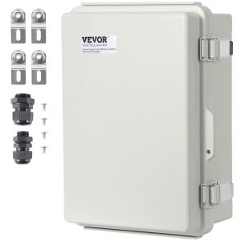
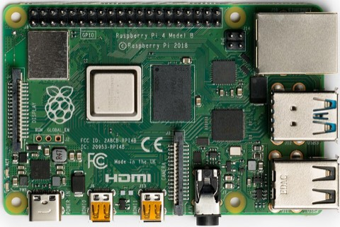
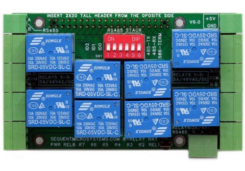
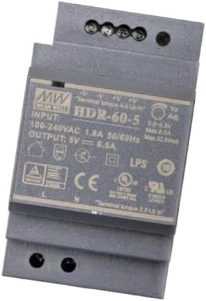
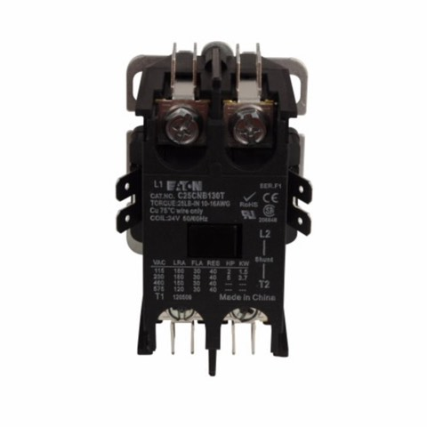
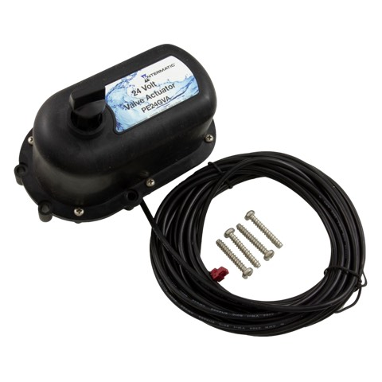
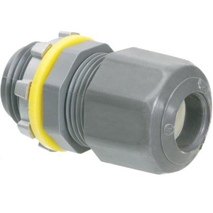
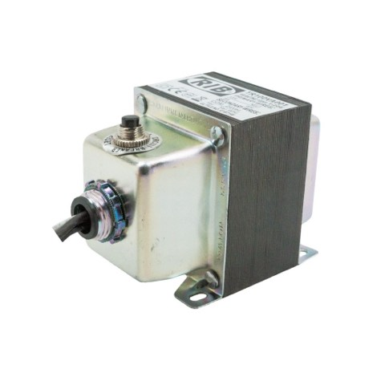
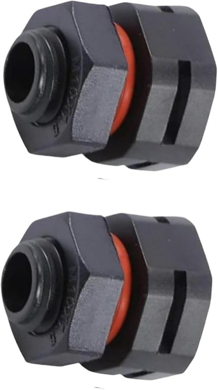

Poolctl · equipment pad
Every part, where it sits on the backplate, and what connects to what — inside a VEVOR SP-CAG-334318 enclosure — 16.93 × 12.99 × 7.09 in outside, and it mounts portrait — so the plate is 11.18 in wide by 15.12 in tall, on detachable ABS. The line-voltage side is an electrician's work and is marked as such throughout.
The organising idea
The panel is laid out in bands by voltage, not by function. Line voltage stays at the bottom where the feeds enter, 24 VAC sits above it, and the logic sits at the top furthest from the transformer. This colour code runs through every diagram and table below — and in the wiring figures it is doubled by stroke weight, line voltage drawn heaviest and signal lightest, so the distinction that matters most never rests on hue alone.
The parts
Nine of the eleven panel components have a chosen part number, and all nine are shown here as the manufacturer or distributor photographs them. The two without a photo are the two that are still undecided — the gap in this gallery is not a sourcing problem, it is the outstanding decisions, and it is worth reading that way.

SP-CAG-334318 · 6.29 in deep inside
Everything below mounts inside this. ABS shell and ABS backplate, IP67/IK08, hinged lid, 304 stainless latches. The photo looks like two glands; the datasheet says one sealing sleeve offered in two sizes, and it is smaller than the 3/4 in entries — so it displaces nothing on the gland order.
Photo: vevor.com

2 GB
Runs njsPC and the supervisor. Sits top-right, diagonally opposite the transformer — away from its heat, its steel core and the line-voltage band.
Photo: Wikimedia Commons, Laserlicht, CC BY-SA 4.0

8-REL v6.0 · 4 A / 120 V
The eight channels. Stacks on the Pi on 11 mm standoffs and powers it over the GPIO header, so the Pi has no USB-C supply of its own in the panel.
Photo: sequentmicrosystems.com

HDR-60-5 · 5 V 6.5 A
DIN-rail 5 V supply. Line in, 5 V out to the HAT’s own connector. Step-shape case, so it clips to the same rail as the terminal blocks.
Photo: Amazon (B07VQ8WQZ8)

C25CNB130T · 30 A · 24 V coil
CH6 pulls this coil; the contactor’s own contacts carry the blower. Sized for inrush so the 4 A relay never sees it — a welded relay would leave the blower stuck on and unreachable.
Photo: electricalparts.com

PE24GVA
Intake, return and bypass. These mount on the valves out at the pad, not in the box; their three-wire runs come back through glands on the left face.
Photo: ezpools.com

LPCG757 (3/4 in) · LPCG50 (1/2 in)
Seals every cable through the enclosure wall. Cord range decides which size each cable gets — a cable thinner than the grip’s range does not seal, so this is a per-cable choice, not a bulk buy.
Photo: rexelusa.com

100 VA · Class 2 UL5085-3 · 3.80 lb
Powers three actuators plus the contactor coil, and carries its own manual-reset circuit breaker — the button on top. Class 2 is not a nicety here: it is what ADR-8 requires of anything feeding a PE24GVA, and this part is listed for it.
Photo: ZOT Supply · specs: manufacturer datasheet
Carries the PSU, distributes 24 VAC, and lands every field wire so nothing terminates directly on a relay screw.
Why there is no photo: Nothing specified beyond a ~$40 allowance. Block count follows from the entry table below, once the entries are final.
Where every equipment grounding conductor lands — feed in, blower out, light out. In a plastic box this is a plain insulated bar screwed to the plate, not a load-centre bonding bar: there is no metal can to bond.
Why there is no photo: no part chosen. It was drawn in Figure 1 and named in the assembly sequence without ever reaching the BOM — now added at ~$10.

dual-port · 2-pack · metric thread
Equalises pressure and drains condensate without breaking the IP rating. A sealed box in Florida sun breathes whether you plan for it or not. Two in the pack, so one is a spare.
Photo: Amazon (B0H3C4CML7)
Pi accessories are not shown: the microSD card, the M2.5 standoffs and the heatsink kit are chosen but belong to the Pi rather than to the plate.
Figure 1
Heaviest item and the biggest heat source. Low keeps the centre of mass low; left puts it as far as possible from the Pi.
Diagonally opposite the transformer. Away from its heat plume, its magnetic field, and the line-voltage band.
There is no separate terminal block: the HAT carries the transceiver and its own A/B/SHLD terminals, and presents on the Pi's GPIO UART. The run is the most noise-sensitive in the panel, so keep it off the contactor side on its way up.
Line voltage along the bottom, where water runs down a cable and every conductor gets a natural drip loop. Low voltage down the left face, because ten entries do not fit on one 12.99 in wall.
Figure 2
100 VA rather than 75. njsPC diverts both valves at once — measured on the bench, not assumed — so the "sequenced, never simultaneous" assumption that made 75 VA work does not hold. Three actuators moving together draw 54 VA before the contactor coil pulls in. Class 2 is then settled by the part rather than by arithmetic: the TR100VA001 is Class 2 UL5085-3 listed and carries its own manual-reset breaker, which is what ADR-8 actually requires of anything feeding a PE24GVA.
The HAT
Eight channels, fixed by the equipment rather than by preference. Channels 1–3 need changeover contacts because a three-wire actuator keeps one of two lines energised at all times; channels 4–5 must be isolated because the Raypak supplies its own low voltage on that terminal block.
| CH | Load | Contacts | Class | Lands on |
|---|---|---|---|---|
| 1 | Intake actuator | COM / NO / NC | 24 VAC | TB2 → gland 1 |
| 2 | Return actuator | COM / NO / NC | 24 VAC | TB3 → gland 2 |
| 3 | Bypass actuator | COM / NO / NC | 24 VAC | TB4 → gland 3 |
| 4 | Heater POOL, terminal 23 | dry, isolated | dry | direct to HAT, gland 4 |
| 5 | Heater SPA, terminal 24 | dry, isolated | dry | direct to HAT, gland 4 |
| 6 | Blower | NO → contactor coil | 24 VAC | TB5, coil in panel |
| 7 | Light | NO, in the load's loop | 120 VAC | gland 8, to and from T40004RT3 |
| 8 | spare | — | — | chlorinator gate dropped — see below |
Resolved, and in the favourable direction. The board that arrived is V 7.1, not the v6.0 the product photograph in this document shows, and its silkscreen differs in exactly the place that mattered. It reads ALL RELAYS 120VAC/30VDC, with per-channel current beside each connector group: REL1,3: 10A, REL2: 8A, REL4: 3A, REL5: 3A, REL6,8: 10A, REL7: 5A.
So 120 VAC is rated outright and CH7 drives the light directly — the interposing relay this BOM lacked is not needed. The light draws under 1 A into a 5 A channel; the actuators are 0.75 A into 8–10 A; the heater dry contacts are milliamps into 3 A. Nothing here is close to a limit.
The v6.0 figure of 5A/48VAC/DC was never wrong — it was a fact about a different board. Worth asking Sequent why the revisions disagree: if it is a creepage change it bears on any spare bought later, and if it is a correction then v6 cards in circulation are mismarked. Not blocking anything now.
Read off the V 7.1 card, the halves of the board disagree with each other:
| Group | Terminal order |
|---|---|
| RELAY 1–4 | N.C. · COM · N.O. |
| RELAY 5–8 | N.O. · COM · N.C. |
The three actuators are CH1–3, so they sit in the first group and take N.C. first — which is what Figure 4’s inset draws. Swapping the two on those channels inverts which position a valve rests in with the coil off, and ADR-9 turns on relay 3 resting in flow. On a board whose halves are mirrored, count the screws rather than carrying muscle memory from the other end.
Confirmed with a meter, 28 August 2026, one relay at a time on a bare card — not read off the silkscreen and trusted. Both groups are exactly as printed, and COM is the middle screw on all eight. The mirroring has a dull cause: the board is laid out with 180° rotational symmetry, so one silkscreen reads two ways depending on which half you are facing.
Board landscape, GPIO header along the top, terminal blocks down the left and right edges, screws running vertically in each block:
top +-----------------------------------+ 8 | | 1 7 | header, DIP | 2 6 | | 3 5 | | 4 +-----------------------------------+
The right edge runs 1–2–3–4 top to bottom; the left edge runs 5–6–7–8 bottom to top. Measured by latching each relay in turn and finding the block whose contact moved, then marking the numbers on the card in permanent marker.
This is not guessable and it is not printed anywhere useful. Everything established before this point mapped bits to LED labels; nothing tied an LED to the terminal block beside it, and on this card that adjacency is not a safe assumption. Work from the numbers on the card, or repeat the measurement — docs/bench-relays.md, Test 1b.
| Channel | Relay | Edge | Safe state | Screw to use |
|---|---|---|---|---|
| Intake valve | 1 | right, 1st | pool | top · N.C. |
| Return valve | 2 | right, 2nd | pool | top · N.C. |
| Bypass valve | 3 | right, 3rd | flow through heater | top · N.C. |
| Pool heat | 4 | right, 4th | contact open | bottom · N.O. |
| Spa heat | 5 | left, bottom | contact open | top · N.O. |
| Blower | 6 | left, 3rd | off | top · N.O. |
| Light | 7 | left, 2nd | off | top · N.O. |
| Spare | 8 | left, top | — | — |
Every one of these pairs with COM, the middle screw.
Pool heat and spa heat straddle the boundary between the two groups, so the matched pair takes different screws: CH4 is the bottom screw and CH5 is the top one. Both are N.O., because a heat call must be absent when the coil is.
This is the easiest mistake available on this card and it fails in the worst direction. Wire the two alike and one of them sits closed while the supervisor believes the heater is idle — a heat call nobody made and nothing in software can see.
The heater's three-wire interface is powered by the Raypak, not by this panel. Those two channels must be genuinely isolated dry contacts with no path back to the 24 VAC transformer — tying them to the panel's common is the one wiring mistake here that damages equipment rather than just failing.
Figure 3
The same eight channels, drawn terminal to terminal. Read it left to right: what feeds the contact, what the contact is, and what it lands on. Five channels are fed from this panel's own buses, two are dry contacts that must touch nothing here, and one pulls a coil and nothing else.
Figure 4
Figure 3 draws all eight channels at once, which is the wrong scale for the question that actually comes up while holding a screwdriver: where does each individual wire go? So here is one valve — channel 1, the intake actuator — drawn as the complete circuit it is, out of the transformer, through the relay, out to the actuator and back.
It is a loop, and that is the part the plan views hide. Every other figure here draws a cable as a line going somewhere. Current does not go somewhere; it goes around. Twenty-four volts leaves one end of the transformer secondary, reaches the actuator through whichever conductor the relay has selected, passes through the motor, and comes back on black to the other end of the secondary. Two of the three conductors are in a complete circuit at any moment. The third is simply open.
The relay does not switch the valve on and off. This is the thing worth reading twice, and it is why channels 1–3 need changeover contacts rather than the ordinary on/off kind. COM is permanently fed with 24 VAC. The contact chooses whether that feed continues to N.C. or to N.O. — so one of white and red is live at all times, in both valve positions, including when the Pi is off. Energising the coil moves the feed from one to the other, and that is the entire command.
Which is why a permanently live wire does not cook the motor. The actuator's cam opens that direction's limit switch as it arrives at the end of travel. The line stays energised; the motor stops. This is also what lets ADR‑9 hold relay 3 energised through all of pool mode without a duty cycle problem — the 1 min ON / 8 min OFF limit governs movement, not sitting still with a line hot.
Which conductor gives which position is decided at the valve, not here. Red and white are just "the two directions"; the cam plate and the rear AUTO 1 / OFF / AUTO 2 toggle set what those directions mean physically. If the valve ends up backwards on first power-up, flip the toggle at the actuator — do not rewire the panel, and do not swap red and white at the terminals. Swapping them inverts the fail-safe, which is the one property here chosen deliberately: with the coil unpowered, the bypass must rest in flow.
Only two blocks on rail B belong to this valve. TB2a and TB2b carry white and red, each landing the field wire in one clamp and the wire up to the HAT in the other. Black shares the common bus with the other two actuators and the contactor coil, and the hot side is shared the same way. That is the whole reason for the jumpers: one arriving conductor, several departing ones, at one potential.
One thing this exposes. The terminal schedule on rail B reads TB1 COM · TB2–4 valves · TB5 coil, which named a common bus but no hot bus — though the hot leg needs exactly the same treatment, since it feeds four COM screws. Figure 6 settles it: three blocks for each bus, bridged by a comb, and a schedule that adds up to something you can order against.
Figure 5
Figure 1 says where the parts go and Figure 3 says what connects to what. This is both at once: every cable drawn on the real plate, entering at its own gland and routed through the gaps the parts leave. Colour is voltage class, as everywhere else.
Figure 6
Figure 4 followed one valve. This is the whole 24 VAC network at once — three actuators, the blower coil and the transformer — drawn at the level the confusion actually lives at: which conductor lands in which clamp, and what the jumpers tie together.
Positions here are chosen for legibility, not measured. Figure 5 is where the cables really run; this is what happens once they arrive.
The entanglement is two nodes. Everything else is point to point. The hot leg of the secondary arrives once and has to reach four COM screws; the common leg leaves once and has to collect three actuator blacks and the far side of the contactor coil. Those are the only two places where more than two conductors meet, and both are made by a comb rather than by twisting wires together in a clamp.
Two clamps per block, and the jumper is separate. A feed-through block has one clamp on each side of a single internal bar, so one block already takes two conductors — that is what the switched pairs use, HAT wire in one side, field wire out the other. The comb plugs into a third opening on the front and bridges neighbouring bars without consuming either clamp. So a node does not need a block per conductor.
But it does need a block per conductor leaving in the same direction, and that is what sets the count. The two clamps of a block face opposite ways. All four COM conductors go to the same place — up to the HAT — so all four want the upper clamp, and four upper clamps means four blocks. Dividing 5 conductors by 2 clamps gives 3, which is the number that fits the copper and the wrong number to build: one COM would have to leave on the face pointing away from the HAT and route back around the strip. The hot bus is four.
The common bus is five, and there is no choice about it. Every one of its conductors leaves downward — the transformer common, the contactor coil return, and the three actuator blacks routed under the strip to their glands. Five conductors on one face is five blocks. Its upper clamps are all spare, which is a good place to put a meter probe.
Read the table by column and the whole rule is visible. Eleven entries in the upper column, thirteen in the lower, and no cell doing double duty. Four COMs stacked in the upper column is why the hot bus is four blocks; five returns stacked in the lower column is why the common bus is five.
| Block | Group | Upper clamp — toward the HAT | Lower clamp — toward the field |
|---|---|---|---|
| 1 | hot bus | CH1 COM | transformer hot leg in |
| 2 | hot bus | CH2 COM | — |
| 3 | hot bus | CH3 COM | — |
| 4 | hot bus | CH6 COM | — |
| 5 | CH1 · intake | CH1 N.C. | white → gland 1 |
| 6 | CH1 · intake | CH1 N.O. | red → gland 1 |
| 7 | CH2 · return | CH2 N.C. | white → gland 2 |
| 8 | CH2 · return | CH2 N.O. | red → gland 2 |
| 9 | CH3 · bypass | CH3 N.C. | white → gland 3 |
| 10 | CH3 · bypass | CH3 N.O. | red → gland 3 |
| 11 | coil | CH6 N.O. | contactor coil, leg A |
| 12 | common bus | — | transformer common leg in |
| 13 | common bus | — | black ← gland 1 |
| 14 | common bus | — | black ← gland 2 |
| 15 | common bus | — | black ← gland 3 |
| 16 | common bus | — | contactor coil, leg B |
Sixteen blocks, one four-way comb and one five-way — 32 clamps for 24 conductors, so eight spare. That is the count to order against, and it is the first time this plan has had one: the BOM line still reads terminal blocks — no part chosen.
Size it before you buy it. Sixteen blocks at a typical 6.2 mm pitch is about 3.9 in, comfortably inside rail B’s 8 in even after two end brackets. But pitch runs from roughly 5.2 to 8 mm across the usual 2.5–6 mm² range, so this is a number that depends on the part and there is no part chosen yet. Add end plates: a feed-through block is open on the face the comb enters.
The comb is the one part that can short the transformer. It must be a four-way piece on blocks 1–4 and a five-way on 12–16, and neither may reach a neighbour. The gap drawn before block 12 is an end plate, and it is there for this reason. A comb that over-runs block 4 into block 5 ties the hot bus to CH1’s N.C. output, so white and red go live together and the intake actuator is driven both ways at once. One that reaches back from block 12 into block 11 ties CH6’s N.O. to common, and the first blower command is a dead short across the secondary. Cut them to length, count the ways twice, and leave a gap block if the part you buy cannot be cut cleanly.
Rail C adds four more. This figure is rail B only — the 24 VAC side. The panel’s own 120 V feed arrives once and has to reach two places, the transformer primary and the 5 V supply, so line and neutral are each a three-conductor node: two blocks apiece, bridged two-way. Four blocks, two combs. Nothing else lands there — the blower goes straight to the contactor and the light straight to CH7, both looped from the Intermatic subpanel, and every equipment grounding conductor goes to the bolted PE bar rather than to a rail. Twenty blocks on the panel altogether.
Two faces
Split across two faces: low voltage down the left, line voltage along the bottom. Ten entries need about 13.25 in of hole and clearance and the bottom wall offers roughly 11.5 in usable, so one row was never going to work — and splitting them puts the two classes through different walls, which is where they should have been anyway. Every grip seals only inside its cord range — a cable too small for the grip leaves an open hole just as surely as one too large.
| # | Face | Cable | ~OD | Fitting | Range | Hole |
|---|---|---|---|---|---|---|
| 1–3 | left | Actuator pigtails ×3 24 VAC | 0.25″ | LPCG503 | .100–.360 | 7/8″ |
| 4 | left | Heater 3-wire, 18/3 dry | 0.20″ | LPCG503 | .100–.360 | 7/8″ |
| 5 | left | RS-485 to pump signal | 0.21″ | LPCG503 | .100–.360 | 7/8″ |
| 6 | left | RS-485 to cell signal | 0.21″ | LPCG503 | .100–.360 | 7/8″ |
| 7 | bottom | Panel supply in, ~2.6 A line | 0.53″ | LPCG757 | .385–.600 | 1-1/8″ |
| 8 | bottom | Blower loop, to/from subpanel line | 0.53″ | LPCG757 | .385–.600 | 1-1/8″ |
| 9 | bottom | Light loop, to/from subpanel line | 0.45″ | LPCG50 | .200–.485 | 7/8″ |
| D | bottom | Breather screw, IP68 vent | — | M12×1.5 | — | 12.5 mm |
The breather is metric, everything else is not. Rows 1–8 are imperial trade sizes; row D is an M12×1.5 thread wanting a 12.5 mm hole. A 1/2″ bit is 12.7 mm — 0.2 mm over, which the O-ring will probably still seal, but it is a sloppier hole than the one part on this panel whose whole job is to keep water out deserves. Use a 12.5 mm bit or a step drill with that detent.
Conduit changes rows 6–8 entirely. If the line voltage arrives in conduit rather than as cord, those want hubs, not cord grips. Ask whoever does the 240 V side first.
Flat cable never seals in a round grip. UF-B and NM-B are flat. If either is being pulled, the fitting is wrong regardless of size.
Measure the cable, then drill. The ODs above are typical SOOW. A wrong-sized hole in a sealed box is not recoverable — keep a couple of rated hole plugs on hand in case.
Order of work
The order matters in two places: the plate is laid out before anything is drilled, and the panel is proven at 24 VAC before line voltage is ever connected.
/dev/serial0, set enable_uart=1, remove console=serial0, and set the HAT's TX/RX DIP switches on. The supervisor will tell you on screen if the port is still missing.Not settled
Per architecture.md the field cable goes straight to the
HAT's own terminals, and Figure 5 draws it that way. Worth deciding
whether it should: landing a field cable on a stacked HAT means
unplugging the bus to lift the card, and an intermediate terminal block
would fix that. Nothing in this project has proposed one — this is a
suggestion, not a decision already made.
4 A/120 VAC on the product page, 5 A/48 VAC on the board itself. Until Sequent resolves it, no 120 V may land on the card, and CH7's direct light connection is the one part of the design that assumes it can. Ask what the silkscreen refers to and why relay 4 differs.
Figure 3 shows the shield reaching the HAT and stops there. Whether it lands at one end, both, or through a capacitor is a real decision about ground loops on a run that leaves the box, and nothing in this project has made it. Decide it before the cable is pulled, not after.
The only figure is +14 °C over ambient, measured on a bench without the HAT and unsealed. Four heat sources go in this box. Measure before adding vents — venting trades a corrosion exposure for a temperature rise nobody has quantified.
Assumed 45 s, never timed. njsPC currently restarts the pump 20 s
after a valve move, so if the assumption holds the pump restarts
mid-swing. Time a valve, then set valveDelayTime above it.
Unbuilt on purpose. The HAT's own watchdog cuts power to the Pi rather than dropping relays, and whether relay state survives that decides the design. Ten minutes on a bench answers it.
Rows 6–8 of the entries table assume round cord. The electrician's answer changes the fittings, and possibly the hole sizes.
Everything marked 120 VAC — the feed, the blower run, the light, the ground bar, and NEC 680 equipotential bonding — is work for a licensed electrician, and in most jurisdictions needs a permit and an inspection. This plan says where those conductors land inside the box. It is not a wiring guide.